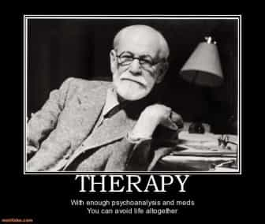

Neil Strauss is well known as the author of The Game, a book that brought pickup artistry into the public consciousness. It’s a fun read, documenting his rise from AFC to seduction superstar. In fact, it inspired my own magnum opus, and I was curious to see where Neil’s journey led afterward.
The Truth, describing the further tribulations of his love life, is a grim read. It’s a very different book. The Game had lots of surreal moments, such as Mystery’s near-fatal bouts with ONEitis, and their misadventures in Transnistria. In The Truth, the surrealism is far darker. The first part documents his misadventures in therapy.
Sex Rehab

The action begins after Neil got busted cheating on his girlfriend Ingrid. A friend persuades him to check into a high-end addiction treatment center. (In several details, the unnamed facility seems very much like the place Harvey Weinstein briefly went following his meltdown.) For mere mortals, the price for high-end inpatient therapy is a king’s ransom. Fortunately, Neil had plenty of income from book sales to try to get his head unscrewed. This includes royalties from The Game, an irony that didn’t escape him.
Upon arrival, he’s hastily diagnosed with an impressive (and debatable) laundry list of conditions, up to and including brain damage. As soon as he objects to an item stating that he’d taken Zoloft (which he’d never done), he gets another entry on his report for being in denial. When they discover that he’s a major PUA author, he gets grilled about that, of course. So he goes in thinking he made a dumb mistake, and quickly is informed that he’s dysfunctional nine ways from Sunday.
Neil is put on suicide watch—not that he’s tempted; it’s basic standard operating procedure there. Part of this includes signing a “no suicide” agreement:
What are you going to do if I kill myself? Kick me out for lying?
The lady doing intake doesn’t much appreciate that. Another required agreement is a three month contract, extending beyond the inpatient program: no sexual activity, no porn, no masturbation, basically no impure thoughts even. (A hard-mode reboot can be quite helpful, but he gives into temptation days later.) Despite all the rules and regimentation, it’s actually a nice place, at least for what’s essentially a psych ward.
Neil’s roommate is in for cheating too. His marriage had deteriorated after his wife became lazy and emotionally distant. (Adam isn’t exactly the only dude who committed adultery following a situation like that.) Other guys really do need serious help. Calvin blew $125-250K (depending on how you count it) on hookers. Another guy banged a horse, among other personal quirks.
I can understand getting lonely occasionally, but some of that just seems a little much. Sexuality is indeed a powerful force. It’s generally a good thing, but one that should be channeled in the right direction.
Group therapy

After settling in, the discussions started—lots of them. Joan, one of the directors, seems like a cross between a hellfire-and-brimstone fundamentalist preacher and Andrea Dworkin. Much like second wave feminists, she spends a lot of time demonizing sexuality. (That goes a bit beyond the “channeled in the right direction” principle.) For one example:
“Do you realize that you’re harming these women when you use their bodies to masturbate with?” Joan admonishes Calvin. She senses he’s on the verge of tears, then tries to bring him over the edge. “They don’t care about you. These are hurt and abused women. And you’re reenacting their childhood trauma. You are their father, their first boyfriend, the predator who raped away their innocence.”
I disapprove of prostitution on moral grounds too; I’ve never done “pay for play” because it’s a nasty business. I’m certainly not opposed to telling people to un-fuck themselves either. Still, reducing a patient into a sobbing wreck might be counterproductive. During a later Joan presentation:
I look around and see Calvin drifting off again, no doubt fantasizing about Carrie.
He also privately tells Neil that at least he got something for his astronomical hooker tab.
Beyond discussing morality at an appropriate level, what else could be said? I’d tell Calvin that it’s irrational to keep wasting a fortune by letting the little head do the thinking. Also, I’d recommend fixing his personal problems, developing his social skills, pursuing excellence, and finding a real girlfriend he doesn’t have to rent. I’ll go out on a limb and speculate that perhaps other game authors like Roosh, Troy Francis, Kyle Trouble, and Neil himself might concur.
Revelations

They later work with a different counselor. Fortunately, Lorraine doesn’t make Ayatollah Khomeini seem like a jolly old fellow. During the process, Neil confronts some demons from the past. In his youth, he’d discovered his father’s porn videos. The subject matter is pretty weird—not as far out as some of today’s stuff, but it made his parents’ marriage dysfunctional.
His mother relied on Neil for emotional support, which became a smothering dynamic; the basic Freudian mess. Her overprotective and controlling nature caused him to miss out on a golden first hot date. (Unfortunately, I can relate to that one.) In a cathartic therapy session, he exorcizes the demons of the past. Although he’s a lifetime atheist (though Jewish born), he surprises himself by saying Lorraine is doing the Lord’s work.
Considering himself cured, he checks out early. Neil gets back together with Ingrid, but troubles follow. Immediately after, he gets busted watching porn. (That’s not exactly a glorious event.) He also keeps in touch with some old girlfriends—he wasn’t doing anything objectively wrong, but that ignites further drama. His conversations with Ingrid aren’t the best examples of holding frame. Since reading his earlier work, I’ve suspected that Neil and his associates could use more Inner Game development.
Ingrid does seem like a real gem, though sometimes he finds her to be a pain in the ass. He immerses himself in outpatient recovery and psychobabble, but the relationship is beyond repair, eventually disintegrating. However, his misadventures that follow are an entirely different story.
Et enfin
Was Neil’s brain full of Swiss cheese, or did he just make mistakes? Quite likely, this PUA guru had difficulty transitioning to a committed relationship. Sometimes it takes a while for former AFCs to get years of pent-up frustration out of their systems. Neil’s foibles all throughout aren’t encouraging. Still, maybe he’s not a sex addict wracked with irresistible compulsions, but just another fallible human who fucked up.
As Calvin later states:
“If they turn being male and horny into some kind of brain cancer that’s covered by health insurance, they’ll be billionaires.”
“It would be one thing if the treatment worked,” I gripe. “But it’s taken over my entire life. Like half the time, I’m too busy going to meetings and reading books on intimacy to actually be intimate with Ingrid.”
As Bill Clinton might say, give that man a cigar!
The recent trend of medicalizing bad behavior raises a number of questions that don’t have easy answers. Still, sex addiction is real; millions of guys jerking off to porn incessantly provide gallons of evidence. Better answers are needed, especially since today’s dysfunctional sexual marketplace is making society miserable.
Read More: 3 Reasons Neil Strauss And Tucker Max Abandoned The Ideas That Made Them Rich And Famous